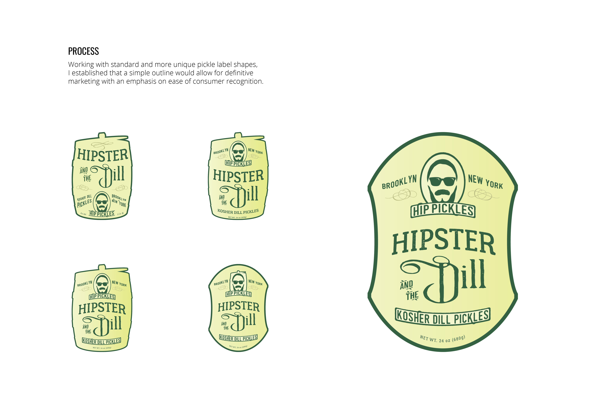
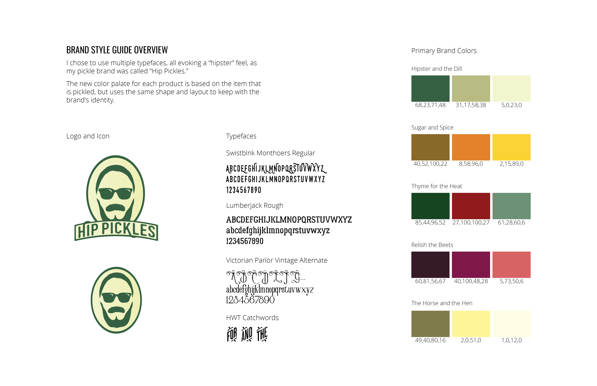
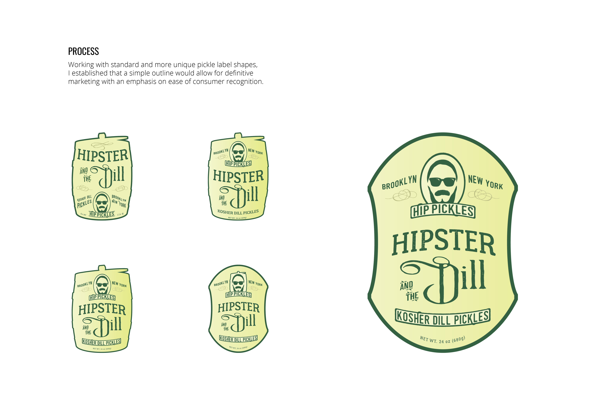
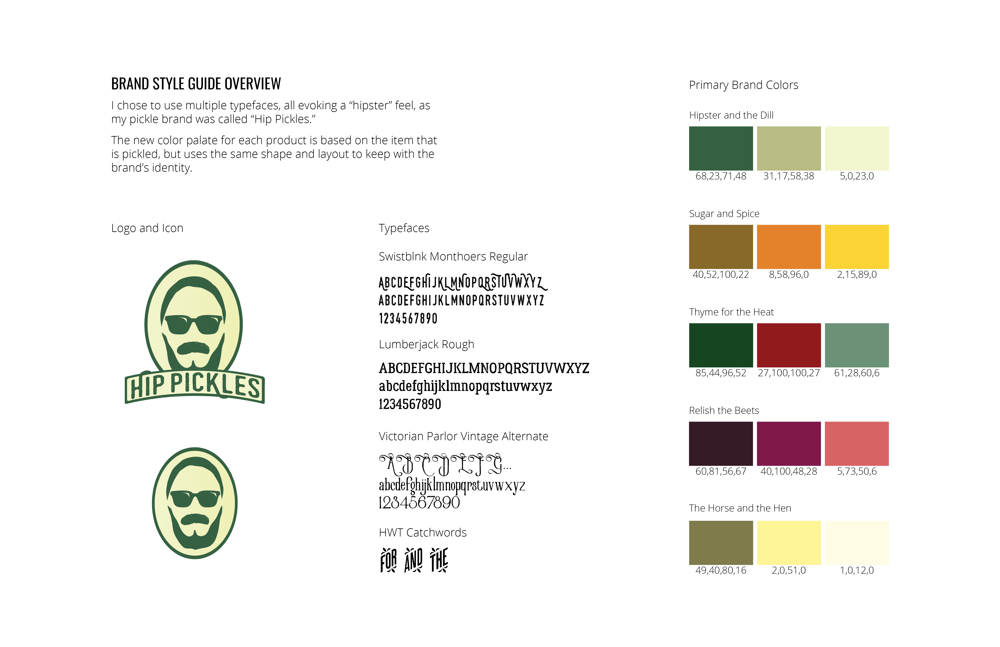

HIP PICKLES
PICKLE BRAND
PICKLE BRAND
Label Design
Mar–Sep 2018 | Parsons | Adobe Ai, Ps
A rebranding project completed as an assignment for Parsons School of Design. I chose to rebrand The Institute of Culinary Education as my subject.

ICON and LOGO
Throughout my logo reworking process, I chose to focus on “The Institute” as a nickname and move toward a logo more representative of the culinary arts.
 


